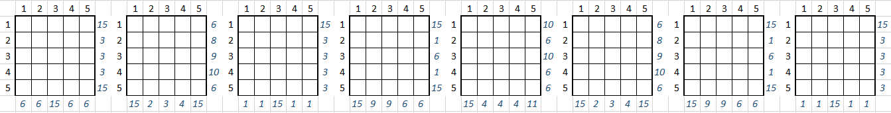

Vous êtes sur la bonne piste ! Pour arriver au bout, vous devez télécharger sur votre poste le portrait des 2 pionniers. Pour cela, il faut d'abord accéder au répertoire de ce site où sont stockés les 2 portraits. Pour connaître le nom de ce répertoire, vous devez relever un nouveau défi ....

Ce défi consiste à remplir chaque grille du jeu Kakurasu : le but est de noircir certaines cellules pour faire apparaître une lettre selon les règles ci-dessous:
1. Les cellules noires sur chaque ligne définissent la somme du nombre à droite de la ligne correspondante.
2.Les cellules noires sur chaque colonne définissent la somme du nombre en bas de la colonne correspondante.
3. Les valeurs des cellules noircies sont définies par les nombres correspondant en tête de ligne / colonne (1 pour la 1ere ligne/colonne, 2 pour la 2eme, etc.)